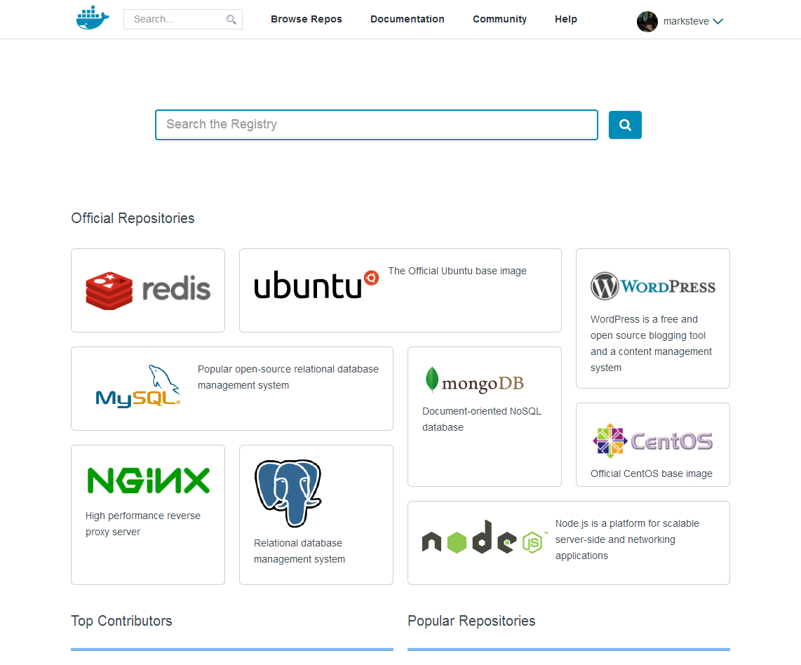

Intro to Docker
Hi, I'm Steve
- Web Engineer @ Insync
- Python, Javascript and Go
- twitter.com/themarksteve
- github.com/marksteve

Docker is an open-source engine that automates the deployment of any application as a lightweight, portable, self-sufficient container that will run virtually anywhere.
System Virtual Machines
- Emulates hardware and OS
- Eats lots of storage space
- Heavy on resources

Docker Containers
- Isolates your app but shares the same resource and OS with the host
- Lightweight
- Portable
- Social!
Docker Components
Daemon, Client and the Registry
Daemon (docker -d)
Receives and processes commands
to manage lifecycle of containers
Client (docker <command>)
Primary user interface to Docker sending
commands through sockets or the RESTful API
Registry (https://registry.hub.docker.com)
Global archive and directory for
user supplied Docker images

Docker Elements
The Dockerfile, Images and Containers
Dockerfile
Blueprint for building images
Images (docker images)
Templates containers are built from
Containers (docker ps)
Isolated environments that runs your apps
Hello World
$ docker pull ubuntu
$ docker run ubuntu echo "Hello, world"
Hello, world
Hello World
$ docker ps -a
CONTAINER ID IMAGE COMMAND ...
aa3264ba7371 ubuntu:12.04 echo Hello, world ...
Building Images
$ cat >Dockerfile <<EOF
FROM ubuntu
RUN apt-get update
RUN apt-get -y install software-properties-common
RUN apt-add-repository -y ppa:rquillo/ansible
RUN apt-get update
RUN apt-get -y install ansible
EOF
$ docker build --rm -t marksteve/ansible .
Build Images
$ docker images
REPOSITORY TAG IMAGE ID CREATED VIRTUAL SIZE
marksteve/ansible latest 7eaee1b6665f 16 minutes ago 368.2 MB
Exposing Ports
# app.py
from flask import Flask
app = Flask(__name__)
@app.route("/")
def index():
return "Hello, world"
if __name__ == "__main__":
app.run(host="0.0.0.0")
Exposing Ports
$ cat >Dockerfile <<EOF
FROM marksteve/python
RUN pip install Flask
ADD app.py /src/app.py
CMD python /src/app.py
EOF
$ docker build --rm -t flask-hello-world .$ docker run --rm -t -i -p 5000:5000 flask-hello-world
Volumes
$ cat >Dockerfile <<EOF
FROM ubuntu
RUN mkdir /volume
RUN touch /volume/shared.log
VOLUME ["/volume"]
CMD ["tail", "-f", "/volume/shared.log"]
EOF
$ docker build --rm -t volume-example .
Volumes
$ docker run \
-ti \
--rm \
--name volume-example \
volume-example
Volumes
$ docker run \
--rm \
--volumes-from volume-example \
ubuntu /bin/bash -il
# Inside container
$ echo "The cake is a lie" >> /volume/shared.log
Host Mounts
$ docker run --rm -v `pwd`:/host ubuntu ls /host
Linking Containers
$ docker run -d --name redis redis
$ docker run \
-ti \
--rm \
--link redis:redis \
redis /bin/bash -il
# Inside container
$ env
$ redis-cli -h $REDIS_PORT_6379_TCP_ADDR
Tools
Orchestration
Service
Questions?
Thank you for listening
I don't own any of the images used in this
presentation except for the title slide background